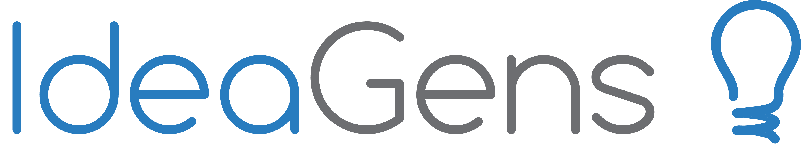

IdeaGens
Fall 2014
- Toolkit:
- Adobe inDesign /
- Sketch (Bohemian Coding) /
- MongoDB
- Usability Testing
- Sketching
- Ideation

IdeaGens is project within Carnegie Mellon's Prototype Lab. IdeaGens is a social ideation system for guided crowd brainstorming. IdeaGens divides the crowd into ideation and synthesis tasks, and enables efficient data-driven facilitation of the crowd’s ideation. This work can inform general strategies for shepherding the crowd to produce better results for complex collaborative tasks. The inspiration for this project came from the fact that many crowd ideation systems seek to gather scores of ideas from people online. However, this often leads to many bad ideas and duplication. A dedicated facilitator who guides exploration of the solution space is a common and effective strategy for optimizing ideation in face-to-face brainstorming, but has not yet been explored in computer-supported crowd ideation. IdeaGens is here to solve that problem.
I am an interaction designer and a developer for the research project. As an interaction designer, I must understand the underlying data structure to design and create sketches and wireframes for main screens and components. As a developer, I contribute to the backend code for the system.